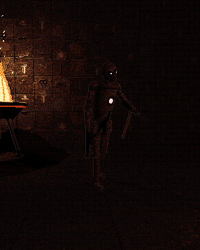
Shambler · corridors
The Wrapped
Slow, heavy, and they step out of wall niches behind you. They take a magazine to the body and grab if they reach you.
Weak point: the heart scarab. One shot.
A first-person tomb shooter. Twin 1911s, torchlight, and whatever is still awake under the sand. Every level is a staircase further down.
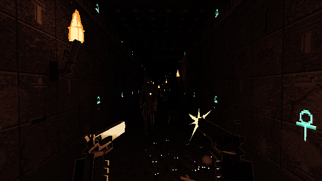
Depth I, the Descending Corridor, in the Dagger look. Rendered at 640 × 360 through the game's own post pass and shown with hard pixels.
The first depth is playable: the descending corridor, the antechamber, your squad's last stand and the hall of pillars, down to the scarab door. Twin 1911s, the squad's Remington 870, a 1940s crate of Mk 2 grenades, mummies and scarab swarms. Mouse and keyboard, gamepad or touch.
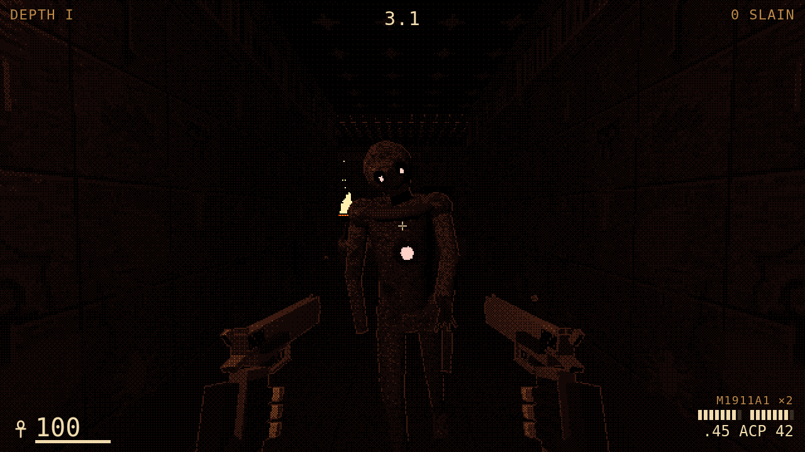
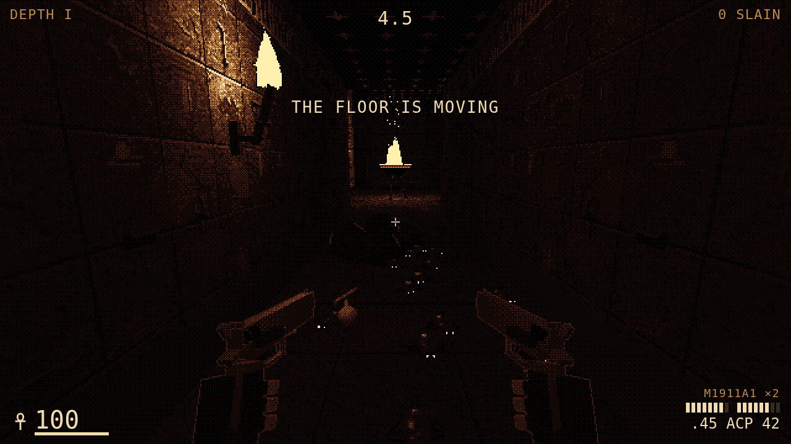
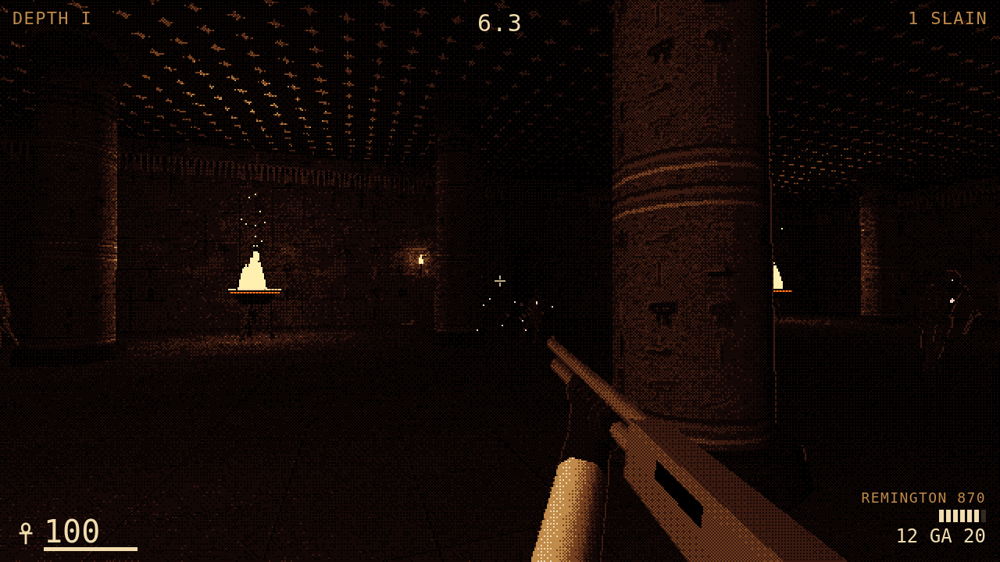
No ambient light worth the name. Small torches every 7 m in passages, big bronze braziers in rooms. Between them the stone falls to black, and the next torch down the hall is a pinprick you walk toward.
Devil Daggers' near-monochrome: one warm ramp from black to bone through a 4×4 ordered dither. Only four things keep their colour: fire, crimson danger, gold reward and the turquoise of a lit sign.
From labyrinth-larry's Sin City pass: depth edges drawn in the opposite tone. On lit shapes they are ink; in the dark they are a faint dithered rim, so a monster arrives as an outline before it arrives lit.
Crimson is danger and only danger: eyes, heart scarabs, weak points. Turquoise light is a sign that means something. Gold marks the way on. Fire is the only warm glow.
Thousands of glyphs are carved and painted on the walls, and in play none of them glow on their own. A lit sign is placed on purpose and always means the same thing, so players learn to read the walls.
Life. A lit ankh marks a shrine nearby that restores health.
Watched. A secret: a false wall, a hidden niche, ammo or a relic behind it.
Khepri, the sun that goes under the world. It is carved on the door at the bottom of every level: the way down.
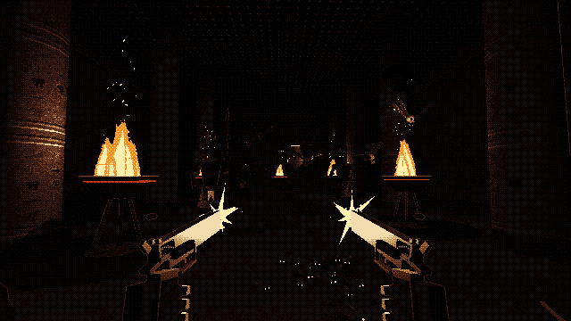
Rooms are arenas. Papyrus columns with painted bands, a lapis ceiling of stars you mostly can't see, and four or five braziers that set where you can see to fight.
Jackal Wardens hold the light. The Canopic Mother floats at the back, birthing a flock of ba. Kill her first or the room never empties.
Both guns firing. Every shot lights the hall for a frame.
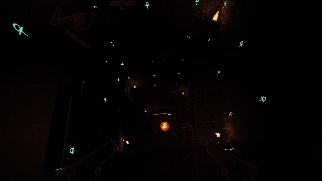
Every level ends by going down. Here it's a burial shaft with a bare stair round its walls and no rail, a torch on every landing. Ba circle in the void and dive at you on the steps.
The bottom is a brazier and a gilded door with the scarab lit on its jambs. Walk through it and the next depth loads.
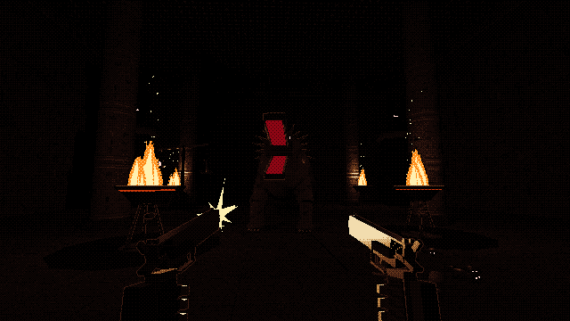
Ammit, Devourer of the Dead, waits under the Scales of Ma'at in a hall of seated Anubis colossi.
Proposed fight: she charges and snaps between the braziers. Shoot the crimson heart on the scales to tip them; while the feather outweighs the heart, she is stunned and her open gullet takes triple damage.
Every eye and weak point glows crimson and nothing else does. Each one must read as a black shape at 40 px tall, because in this light that is often all you get.

Slow, heavy, and they step out of wall niches behind you. They take a magazine to the body and grab if they reach you.
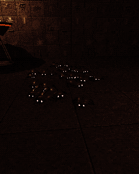
Twenty to forty at a time, pouring from cracks and climbing the walls. One bullet each. This is the Devil Daggers pressure: never stop moving.
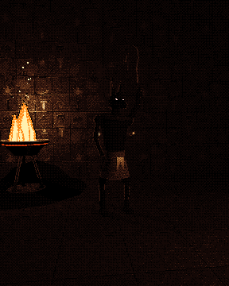
2.5 m tall with a khopesh. They hold the brazier light, close fast, and telegraph a raised blade before the slash.
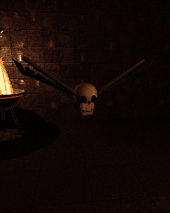
A skull on painted falcon wings. They circle overhead in flocks, then dive one at a time. Our answer to Devil Daggers' skulls.
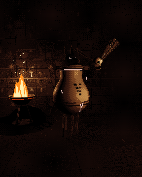
A floating jar the height of a man, with a son of Horus for a lid. Ba hatch from her mouth and scarabs fall from her cracks. She is the priority target.
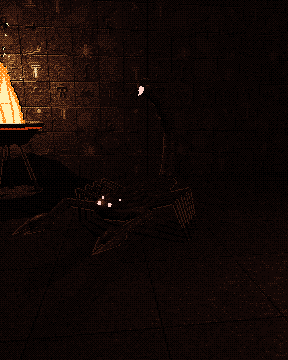
A scorpion the size of a horse. The tail strikes from three metres and pins you; the claws block shots from the front.
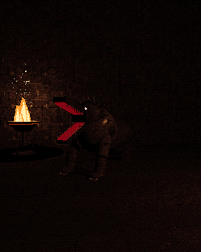
Crocodile head, lion's mane and forequarters, hippo's hindquarters, about five metres long. In the myth she eats the hearts that fail the weighing. Here she eats the ones that fail to keep moving.
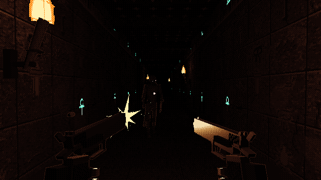
A 1980s soldier. M81 woodland sleeves rolled to the elbow, black fingerless gloves, a digital watch. The M1911A1 was still the US sidearm until 1985, so he carries two, built 1:1 (216 mm long).
Proposed: .45 ACP, 7 + 1 in each gun. Each trigger fires its own gun, so you can alternate for rhythm or fire both for burst damage. Reloads are per gun.
Firing is light. The muzzle flash is a real light, so in a dark room your own shots show you what's there.
The soldier brings his 1911s and the squad's Remington 870. The bazooka and the Mk 2 grenades are finds: a 1940s expedition went into the pyramid and left its kit behind. The Staff of Ra is older than all of them. Every weapon is also a light source.
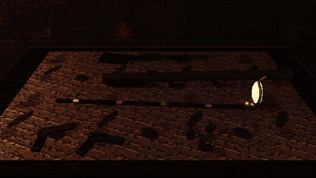
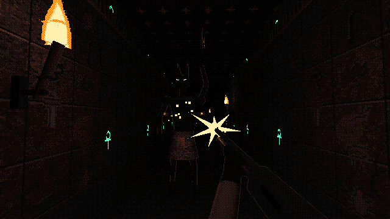
The squad's pump gun: walnut stock, ribbed forend, seven in the tube. Nine pellets of 00 buck. In Depth I you find it with the first of your squad.
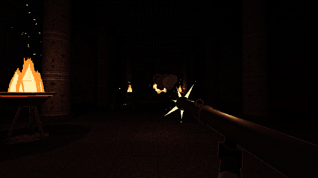
An M1-pattern tube the 1940s expedition carried in. The rocket is a moving light: fire one down a dark hall and see what it passes on the way.
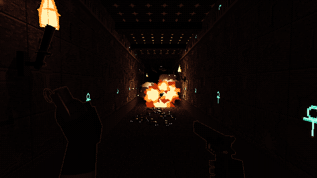
A crate of them, stencilled and rotting, from the same expedition. The left hand throws while the right keeps its 1911. The blast lights the corridor for a second and breaks up swarms.
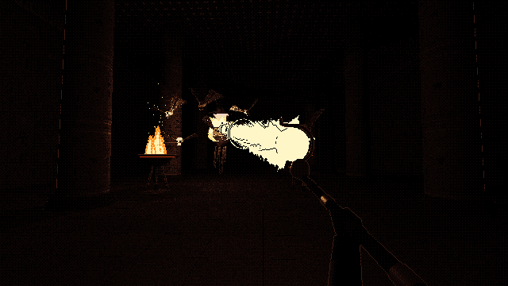
Found at Depth III. A gold and lapis staff crowned by Ra's falcon and the sun disk, throwing a beam of sunlight that burns through a line of enemies. It is the only white light in the underworld.
One post pass, three settings, no material changes. Dagger is the direction. Pigment is full colour through 36 Egyptian inks. Sin City is labyrinth-larry's two-tone ink. All three are in the game's settings.
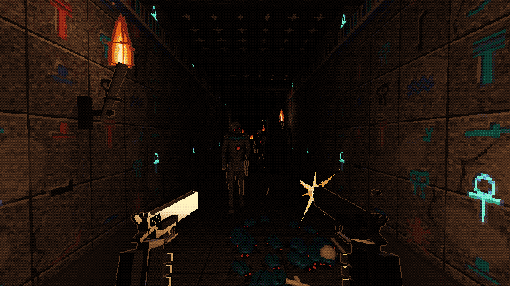
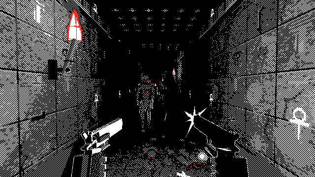
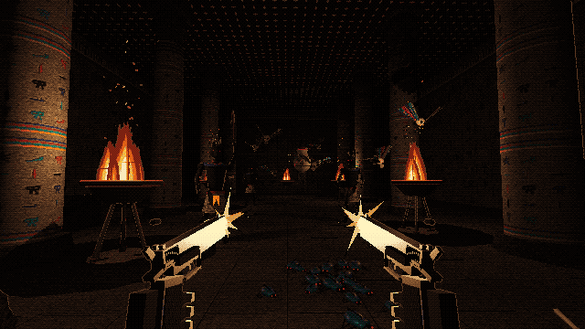
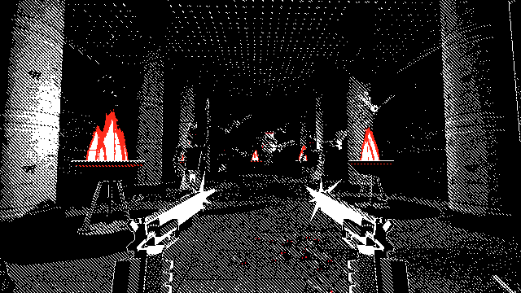
| Repo | Used for this concept | Carries into the prototype |
|---|---|---|
| mstr-gme-dsgn-tmpt | House rules: one palette table, colour reserved for danger and reward, the 40 px silhouette test, concepts before code. Vendored three.js r160. | Sim / render / UI split, a TUNING table with a reason for every number, clamped dt, pooled lights, the pitfalls checklist. |
| labyrinth-larry | The Sin City pass: material roles patched in with one shared uniform, a full-screen post shader, depth edges in the opposite tone. | The torch light pool: a few real lights handed to the flames nearest the player each frame. |
| Vertical-Vantage | Its Egypt pack: glyph panels, wall torches, the cyan data glyphs that became our lit signs. | The first-person core: pointer lock, gamepad, touch twin-stick, a fixed 1/120 s step, the boss toolkit and sim checks. |
| dr-mow | The PS1 pipeline: low internal resolution, a 4×4 Bayer dither, point-sampled textures, hard shadows. | Synth audio and music (no audio files), menu navigation by pad, the retro graphics setting. |